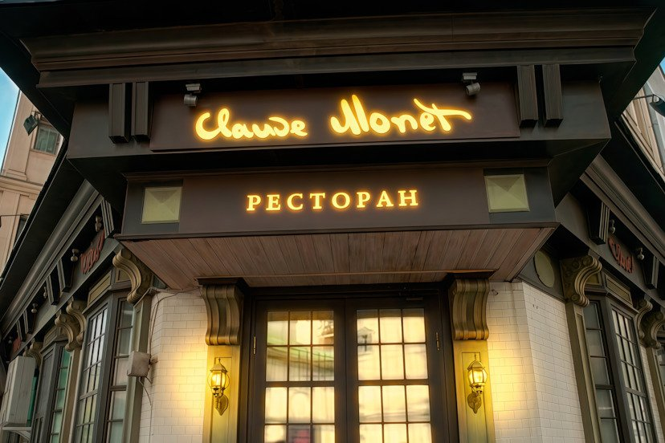

«Клод Моне» — ресторан французской кухни в самом центре города. Мы соединяем классические техники с сезонными продуктами и подаём блюда так же тщательно, как художник кладёт мазок на полотно.
Ресторан открылся с идеей вернуть гостям атмосферу настоящего французского бистро: тёплый свет, аромат свежего хлеба и внимание к каждой детали. Наша команда — это шеф-повар с классическим французским образованием, сомелье, знающий каждую бутылку в погребе, и официанты, которые помнят постоянных гостей по имени. За восемь лет работы мы собрали меню, в котором сезонность важнее моды, а вкус блюда важнее его вида в объективе телефона — хотя выглядят они, признаем, тоже неплохо.
